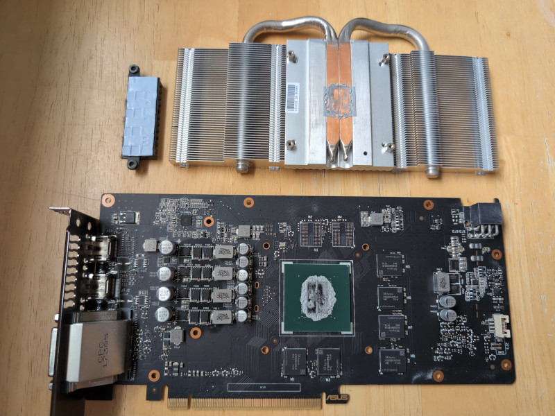

GeForce GTX 1060 Thermal Repaste
The ASUS GeForce GTX 1060 I have installed in a Linux box suddenly started to behave badly. The screen would go dark but everything else would keep running. The dmesg command would reveal the following:
[ 696.858198] NVRM: Xid (PCI:0000:01:00): 79, pid=1579, name=Renderer, GPU has fallen off the bus.
[ 696.858208] NVRM: GPU 0000:01:00.0: GPU has fallen off the bus.
[ 696.858922] NVRM: Xid (PCI:0000:01:00): 154, GPU recovery action changed from 0x0 (None) to 0x1 (GPU Reset Required)
[ 718.874880] nvidia-modeset: ERROR: GPU:0: Failed to query display engine channel state: 0x0000927c:3:0:0x0000000f
[ 718.875505] nvidia-modeset: ERROR: GPU:0: Failed to query display engine channel state: 0x0000927c:3:0:0x0000000f
[ 718.875615] nvidia-modeset: ERROR: GPU:0: Failed to query display engine channel state: 0x0000927c:3:0:0x0000000f
Apparently the GPU had fallen off the bus. It would seem that one of the causes is overheating, so I disassembled the card:

I applied new thermal paste on the GPU core, but left the thermal pad on the VRM section as-is. This solved the problem. To monitor the temperature afterwards I made a quick Python script that utilizes the Cooltek LCD display to display the GPU and CPU degrees:
#!/usr/bin/python3
import serial
import time
import subprocess
import re
class Cooltek(object):
def __init__(self, port):
self.s = serial.Serial()
self.s.port = port
self.s.baudrate = 115200
self.s.bytesize = serial.EIGHTBITS
self.s.parity = serial.PARITY_NONE
self.s.stopbits = serial.STOPBITS_ONE
self.s.xonxoff = False
self.s.rtscts = False
self.s.dsrdtr = False
self.s.setDTR(True) # Important!
self.s.setRTS(True) # Also Important!
self.s.open()
self.s.flushInput()
self.s.flushOutput()
def __del__(self):
self.s.close()
def nvidia_gpu_temp(self):
try:
result = subprocess.run(['nvidia-smi',
'--query-gpu=temperature.gpu','--format=csv'],
capture_output=True, text=True)
return result.stdout.split()[1]
except:
return "Read Error"
def cpu_temp(self):
try:
result = subprocess.run(['sensors'],
capture_output=True, text=True)
reg_match = re.search(r'Package id 0:\s+\+(\d+).',
result.stdout, flags=re.MULTILINE)
except:
return "Read Error"
if reg_match:
return reg_match.group(1)
else:
return "Regex Error"
def loop(self):
while True:
self.s.write(bytes.fromhex("1B4A")) # Clear screen...
gpu = "GPU: " + self.nvidia_gpu_temp()
cpu = "CPU: " + self.cpu_temp()
self.s.write(gpu.encode('utf-8'))
self.s.write(bytes.fromhex("1B592120")) # Cursor to line 2...
self.s.write(cpu.encode('utf-8'))
self.s.write(bytes.fromhex("1B592220")) # Cursor to line 3...
time.sleep(1)
if __name__ == "__main__":
import sys
c = Cooltek("/dev/ttyACM0")
c.loop()
After the re-pasting the temperature stays at around 40 degrees Celsius when idle, or between 70 and 75 degrees Celsius when displaying 3D graphics. Unfortunately I forgot to check the temperature when it was overheating and falling off the bus...